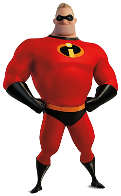
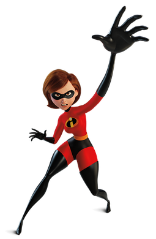
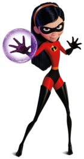

Bob Parr
Robert "Bob" Parr, also known as Mr. Incredible. The strong and determined father who used to be a famous superhero. He has super strength and loves saving people, but struggles to balance his heroic past with being a regular dad. Deep down, he just wants to feel needed and prove that heroes still matter.

Helen Parr
The smart and flexible mom who can stretch her body into any shape. Once a superheroine, she now keeps the family together while showing incredible courage and quick thinking. She’s the heart of the family and a role model of strength and adaptability.

Violet Parr
The shy, intelligent teenage daughter who can turn invisible and create force fields. She often feels awkward and unsure of herself but learns to embrace her powers and confidence. As she grows, Violet finds her voice and discovers that her uniqueness is her greatest strength.